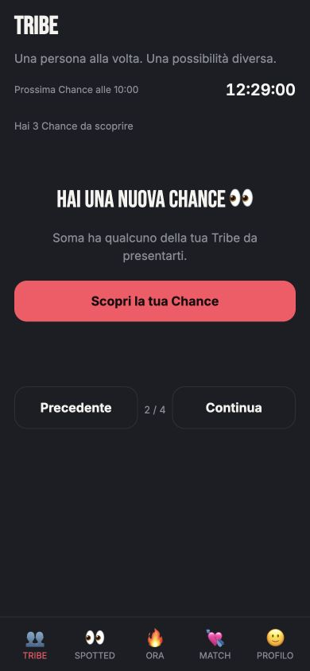
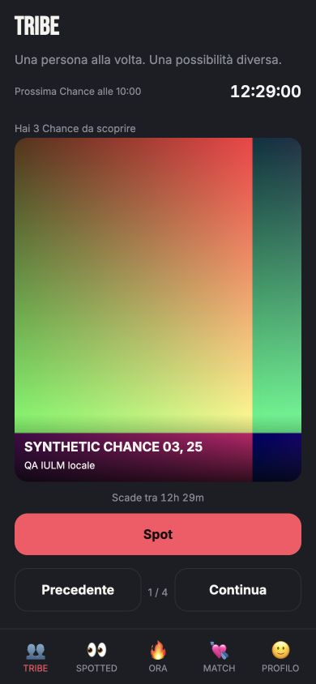
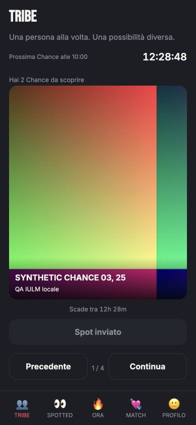
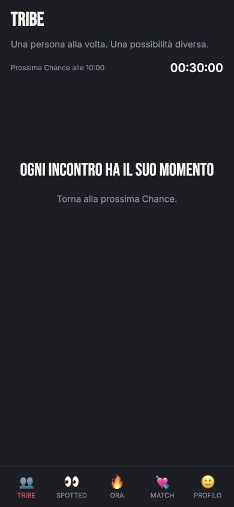
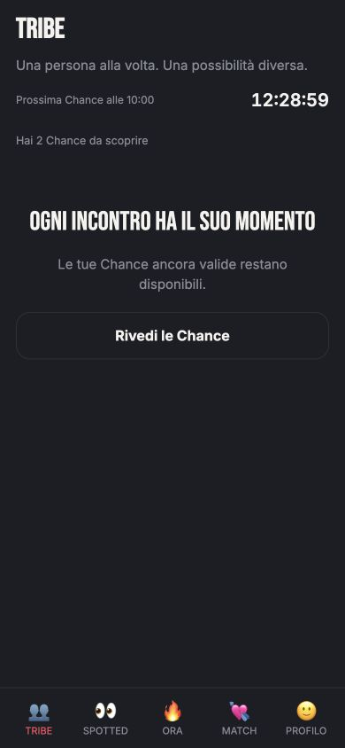
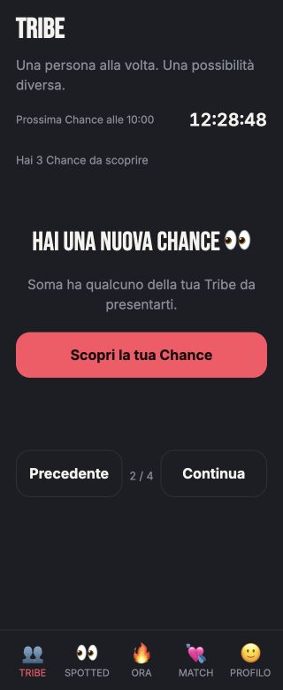
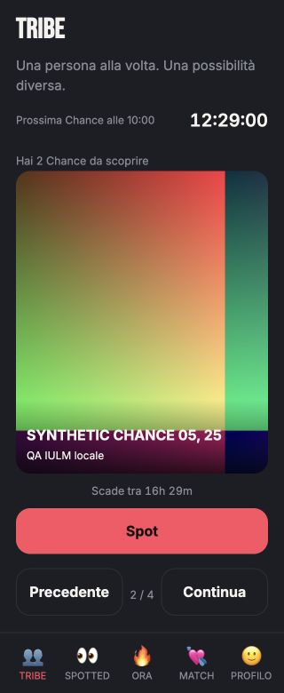
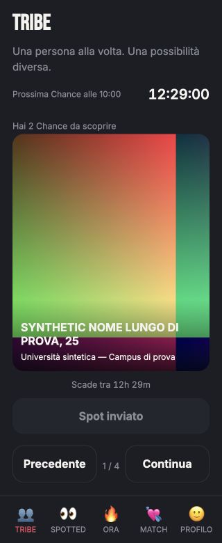
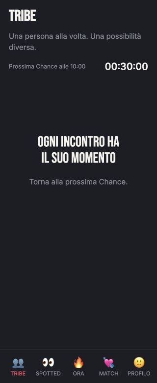

SOMA Chance — visual sanitySOMA · Chance visual sanity
App SOMA reale e RPC/PostgREST locali reali. Fixture sintetiche isolate; nessun utente reale. La foto multicolore è un asset tecnico QA, non una nuova grafica SOMA. Nessuna attivazione staging; nessuna certificazione Auth/PHOTO.
Viewport: 390×844 e 320×780. Solo micro-fix CSS Chance; nessun redesign globale.
A · Attesa / prossimo rilascio B / D · Nuova Chance e backlog solo numerico
B / D · Nuova Chance e backlog solo numerico
C · Profilo rivelato
E · Revisit di una Chance validaF · Dopo Spot
G · Dopo scadenza: profilo rimosso
H · Pool insufficiente: nessun riempimentoFine sequenza / rivedi Chance valide
320 px · Attesa 320 px · Reveal / backlog
320 px · Reveal / backlog
320 px · Profilo e Spot
320 px · Dopo Spot e reload320 px · Testi lunghi
320 px · Dopo scadenza